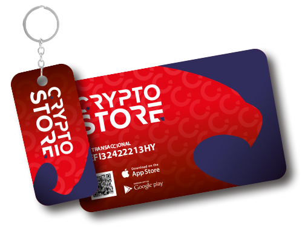

COMPRAR Y VENDER BITCOIN
Abrimos el Crypto Store para facilitar y fomentar la compraventa de Bitcoin en un entorno seguro, profesional y confiable.
Por eso ofrecemos un servicio de compra de Bitcoin al que cualquiera puede acceder y obtenerlos en minutos. De la misma manera, usted puede vender sus Bitcoins en nuestro Crypto Store y recibir dólares o pesos al instante y sin límite de volumen, ya sea en efectivo o vía transferencia bancaria.
En su primer visita le crearemos un Perfil Operacional que le permitirá transaccionar con todos nuestros productos y herramientas disponibles. Una vez que se le ha dado de alta como cliente, se le otorgará un PIN Transaccional y una Clave personal, que serán necesarios para que usted pueda emitir libremente ORDENES DE VENTA, ORDENES DE COMPRA y ORDENES DE PAGO.
Las mismas serán liquidadas al momento, ya sea en efectivo, mediante transferencia vía CBU a su cuenta bancaria o -si son Cryptomonedas- en el Wallet (Billetera Virtual) que usted elija.
Por eso ofrecemos un servicio de compra de Bitcoin al que cualquiera puede acceder y obtenerlos en minutos. De la misma manera, usted puede vender sus Bitcoins en nuestro Crypto Store y recibir dólares o pesos al instante y sin límite de volumen, ya sea en efectivo o vía transferencia bancaria.
En su primer visita le crearemos un Perfil Operacional que le permitirá transaccionar con todos nuestros productos y herramientas disponibles. Una vez que se le ha dado de alta como cliente, se le otorgará un PIN Transaccional y una Clave personal, que serán necesarios para que usted pueda emitir libremente ORDENES DE VENTA, ORDENES DE COMPRA y ORDENES DE PAGO.
Las mismas serán liquidadas al momento, ya sea en efectivo, mediante transferencia vía CBU a su cuenta bancaria o -si son Cryptomonedas- en el Wallet (Billetera Virtual) que usted elija.
Comprar Bitcoins
CERRAR

Comprar Bitcoins
Tanto Bitcoins como las principales Cryptomonedas del mercado se pueden adquirir en nuestro Crypto Store en minutos y sin pagar ningún tipo de comisión o fee, para ello es necesario que el cliente genere una ‘Orden de Compra’.
Para poder emitir una ‘Orden de Compra’ es necesario presentar su ‘PIN Transaccional’ y validarse con su clave personal. Si es la primera vez que nos visita, primero tendremos que crearle un ‘Perfil Operacional’. Este proceso no debería demorar más de 5 minutos.
Con el PIN validado, su Crypto-Asesor ingresa la Operación con la cantidad, el tipo de cambio, la moneda de origen, el medio de pago y el wallet (billetera virtual) donde se depositarán las Bitcoins originados en esta transacción.
El cliente recibe su ‘Orden de Compra’ para realizar el pago utilizando el medio que más le convenga. Una vez que se registra el pago, se emite una ‘Liquidación de Compra Confirmada’ que el cliente debe presentar a su Crypto-Asesor para la liquidación de la operación y la ejecución de la transferencia a la Billetera Virtual beneficiaria de los Bitcoins.
Para poder emitir una ‘Orden de Compra’ es necesario presentar su ‘PIN Transaccional’ y validarse con su clave personal. Si es la primera vez que nos visita, primero tendremos que crearle un ‘Perfil Operacional’. Este proceso no debería demorar más de 5 minutos.
Con el PIN validado, su Crypto-Asesor ingresa la Operación con la cantidad, el tipo de cambio, la moneda de origen, el medio de pago y el wallet (billetera virtual) donde se depositarán las Bitcoins originados en esta transacción.
El cliente recibe su ‘Orden de Compra’ para realizar el pago utilizando el medio que más le convenga. Una vez que se registra el pago, se emite una ‘Liquidación de Compra Confirmada’ que el cliente debe presentar a su Crypto-Asesor para la liquidación de la operación y la ejecución de la transferencia a la Billetera Virtual beneficiaria de los Bitcoins.
Vender mis Bitcoins
CERRAR


Vender mis Bitcoins
El Crypto Store le ofrece la posibilidad de liquidar cualquier posición en Bitcoins (y las principales Cryptomonedas) en minutos y con todos los recaudos de seguridad necesarios para operaciones de gran volúmen. Los Bitcoins se pagan al momento, ya sea en efectivo o vía transferencia bancaria, en la moneda que el cliente elija y no se cobra ningún tipo de comisión o fee al cliente.
Para poder emitir una ‘Orden de Venta’ es necesario presentar su PIN Transaccional y validarse con su clave personal.
Su Crypto-Asesor ingresa la Operación con la cantidad, el tipo de cambio, la moneda de conversión, el medio de pago y el wallet (billetera virtual) donde recibiremos los Bitcoins originados en esta transacción.
El cliente recibe su ‘Orden de Venta’ para que realice la transferencia de los Bitcoins que desea vender. Una vez confirmada la recepción de las Cryptomonedas, se emite una ‘Orden de Venta Confirmada’ que el Cliente debe presentar para cobrar el dinero producido por esta transacción.
Para poder emitir una ‘Orden de Venta’ es necesario presentar su PIN Transaccional y validarse con su clave personal.
Su Crypto-Asesor ingresa la Operación con la cantidad, el tipo de cambio, la moneda de conversión, el medio de pago y el wallet (billetera virtual) donde recibiremos los Bitcoins originados en esta transacción.
El cliente recibe su ‘Orden de Venta’ para que realice la transferencia de los Bitcoins que desea vender. Una vez confirmada la recepción de las Cryptomonedas, se emite una ‘Orden de Venta Confirmada’ que el Cliente debe presentar para cobrar el dinero producido por esta transacción.
UNDER LICENSE GRANTED BY AMERICAN EXCHANGE FINANCIAL SERVICES LLC.
© 2018 - ALL RIGHTS RESERVED
© 2018 - ALL RIGHTS RESERVED